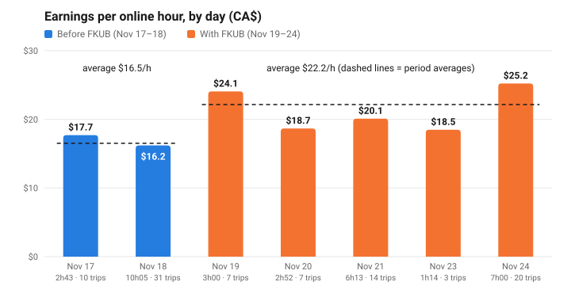

Reinforcement Learning Agent for Slay the Spire 2
Personal project · Oct 2026 – present · Python, PyTorch, C#
An agent that plays complete runs of a deck-building roguelike (about 50 floors and hundreds of decisions per run) without hand-written expert rules, trained on a single desktop PC.
0% → 24.4%single-attempt win rate, 300 fixed seeds
36.8% → 64.5%agreement with human play after pre-training
22,108human replays mined for pre-training
- AlphaZero-style system: information-set MCTS that never peeks at the draw order, a 9.1M-parameter policy-value network, and a PPO network for routing, card rewards, shops and rest sites.
- Diagnosed why an earlier 22.8M-parameter Transformer + PPO agent showed ~60% training win rate but only 12% in real evaluation, and replaced it.
- Strict evaluation: automated 300-seed tests every 4 hours and seed-paired ablations (search budget, PUCT vs Gumbel, value pricing).
Reinforcement learningMCTSPPOPyTorchC# / .NET
Read the full report (PDF)
FKUB: On-Device Offer Evaluator for Delivery Couriers
Personal project · Nov 2026 – present · Kotlin, Jetpack Compose, Android Accessibility API, ML Kit
An Android app that reads each Uber Eats delivery offer as it pops up, checks it against the courier's own fuel, maintenance and target hourly rate, and answers with a coloured glow around the screen edge, so the decision takes no reading or arithmetic. Advice only: it never taps, and offers and screenshots never leave the phone. Used and debugged on real shifts. Free and open source, built for couriers who are paid per offer and deserve to know what an offer really pays.
4 tierscolour verdict from the courier's own costs and target hourly rate
On-deviceOCR and evaluation; screenshots never saved
120+unit tests, many built from real cards reported on the road
$16.5 → $22.2my earnings per online hour, before vs with FKUB (+34%)
$17.0 → $31.8per hour actually on a trip (+86%): less driving and fuel for the same money
$5.16 → $8.83per trip (+71%); 2 days before, 5 days after

My own Uber earnings (tips included, before vehicle costs), Nov 17–18 without the app, accepting every offer that came in, and Nov 19–24 with it, taking only offers that met my own standard. The trip that started the project: 29.92 km and 42 minutes for a CA$5.52 fare. Earning CA$100 took about 5.9 hours on trips before and 3.1 with the app, so about 47% less driving, fuel and wear for the same money (from Uber's per-trip distances: 145 km on trips per CA$100 before, 58 km with the app, about 60% fewer; empty driving between orders is not counted). One driver, one week, no control for demand or tips; not a promise for anyone else.
- Built a one-tap capture tool first; real snapshots showed the courier app hides its UI during offers, so recognition moved to window-only screenshots plus on-device ML Kit OCR with repair of misreads such as CA$678 → CA$6.78.
- Earnings model: tip-free pay versus distance × vehicle cost per km + time × target net hourly, mapped to four tiers (red / yellow / green / blue) with per-tier sounds, speech and vibration.
- Hardened on the road: every missed or misjudged offer became a fix plus a regression test, e.g. OCR splitting "1 hr 10 min" (a $15/h trip shown as $46/h), a float sum of 0.59999996 falling under a 0.6 confidence limit, and map labels leaking into the drop-off city.
- Beyond single offers: per-card badges on the Trip Radar list, shopping time for Shop orders from the item count, a city-only out-of-town alert with optional empty-return cost, and a local statistics tab (share of offers below the courier's own standard, Accept vs Match).
- Pure Kotlin core (parser, adapter, evaluator, tracker) decoupled from Android; conservative parsing returns "unknown" on any ambiguity; fuel price fetched automatically from public government data (or typed by hand); GitHub Actions builds and publishes the APK on every push; English and Chinese UI.
AndroidKotlinJetpack ComposeOCRAccessibilityPrivacy by design
Read the full report (PDF)Source on GitHub
AI Spending Secretary
Capstone, Fanshawe College · Fall 2026 · Backend, OCR and ML lead (with Zhixi Ye, frontend)
A local-first app that turns receipt photos, e-mails and bank statements into an item-level ledger and gives advice before a purchase, such as noticing an item is already owned.
64 / 64receipts kept, 0/88 false keeps on a 152-photo album
2/16 → 11/16consistent readings after LoRA fine-tuning Qwen3-1.7B
258automated backend tests in CI
- Three-stage receipt cascade: MobileNetV3 image gate in ONNX (5 ms per photo), PaddleOCR, and a TF-IDF classifier for partial receipts.
- Privacy tiers: fully offline, cloud on OCR text only with payment lines removed, or a local LLM served by Ollama.
- Four Scrum sprints, 29 user stories in Jira, numbered reproducible experiments for every technical choice.
FastAPIReact / TypeScriptONNX RuntimeOCRLoRA